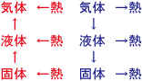

熱力学の世界観です。
理科に詳しい父親の話を参考にしています。
物質は分子で出来ている。これは原子という単位の集合によって成り立っている。
分子は化学式で表される。特に、水は水の分子の集合であり、水の化学式はH2Oだ。これは酸素1つと水素2つが「化合」して生まれている。これは化学における物質の結びつきである。
物質の三態として、固体、液体、気体がある。これは温度によって変化する。分子はそれ自体、「分子運動」という動きをしていて、じっとしていたくない。この分子運動は、温度が高くなる（エネルギーを与えてやる）と運動の強さが強くなる。
水は、0度で氷から水になり、100度で水から水蒸気になる。これは、分子が結合されている強さが違う。固体は、分子は強い結びつきを持っていて、形を変えることが無い。これが液体になると、分子運動が活発になり、それぞれの分子がバラバラになるものの、全体の結合集団は保っている。気体になると、結合集団はなくなり、完全にバラバラになる。これは、「化合」とはまた別の「結合」であり、分子運動がエネルギーによって結合形態を変えていく、というか、運動がある一定のレベルになるとバラバラになってしまう、ということである。
そして、物質は分子で出来ている。分子は原子の集まりである。原子の種類の違いとは、原子の中の陽子（原子核）の数である。陽子の周りを電子が回っていて、この電子が別の原子に流れることで電流が発生する。そして、それが集まって分子となる。分子は分子運動をし、エネルギーを得ることによって結合の形態を変える。その変化するポイントはある温度としてそれぞれの分子ごとに決まっている。
そうすると、物体とは、運動している物質に対するエネルギー（力）の作用であることが分かる。同時に、全ては原子という惑星の運動とエネルギーの持ちようであることが分かる。
液体が気体になるためには熱が必要なため、液体が気体になる時は周りから熱を奪う。この時に奪われる熱を気化熱と言う。
また、液体を熱すると気体になる（加熱）。
逆に、気体から熱を奪うと、気体のままで居られなくなって液体になる。
気体から液体になる時は周りに熱を発生させる（放熱）。この時に放出される熱を液化熱と言う。
また、固体への凝固も同様である。放出される熱を凝固熱と言う。固体から液体への融解の場合は融解熱と言う。
たとえば、液体を強制的に膨張させるなどで気化させると、周りから多くの熱を奪う。

固体から液体への変化を「融解」、液体から固体への変化を「凝固」と呼ぶ。液体から気体への変化を「蒸発」または「気化」、気体から液体への変化を「凝縮」または「凝結」と呼ぶ。
熱を吸収することを「吸熱」、熱を放出することを「放熱」と呼ぶ。
また、固体から液体を経ずして気体になったり、その逆になったりすることを「昇華」と呼ぶ。
それぞれの吸収・放出する熱（潜熱）のことを「融解熱」「凝固熱」「蒸発熱（あるいは気化熱）」「凝縮熱」と呼ぶ。
（詳しくは視覚でとらえるフォトサイエンス物理図録が参考になります。）
2024.05.11
水の氷点0度から沸点100度までを基準にして100等分して計測する温度のことを、セルシウス温度あるいは摂氏温度と呼ぶ。単位として記号℃を用いる。
また、もっとも低い温度は-273.15℃で、絶対零度と呼ぶ。絶対零度においては分子がほとんど完全に運動しなくなり、これ以上低い温度は存在しない。
絶対零度を基準に摂氏温度と同じ目盛りで計測する温度のことを絶対温度（単位K、ケルビン）と呼ぶ。絶対温度を記述するには、摂氏温度に対して273.15を単に足せばいい。
（以上は「基礎からのシグマベスト 高校 これでわかる物理I（文英堂, 2008年発行版）」を参考に執筆しました。）
2024.10.16
身の周りには、物理的現象がたくさんある。
機械を見ると、ピアノは音が鳴るし、ストーブは火を燃やすことで熱を与えている。
そして、ものには重さがあって、ものは持っている手を放すと地面に落ちる。この時、重さは質量だと習ったかもしれないが、本当は重さを与えているのは重力であり、重力が質量の分だけ、力を物質に対して影響させているのだ。
また、光は世界を照らしてくれる。工学的に見れば、光や熱は火の代りに使うことも出来るだろう。
そして、機械だけではなく、ものの領域を見ると、数学や生物学も多いことが分かる。箱は大きい方がたくさんのものが入る。ペットボトルも、たくさんの液体を入れることが出来る。食べ物は生物学だ。
物理は、とても楽しい学問だ。そして、数学もとても賢い学問だ。数学的・論理的に考えることは、頭を賢くしてくれるだろう。厳密に考える力を養うことで、自分でも物理学者のように宇宙のことを解明出来るようになるだろう。実験と仮説の考え方は、物理学だけではなく、プログラマや経済学者のためにも、とても有用だ。
工学的に見ると、異なるエネルギーを変換することが出来る。電気エネルギーを熱エネルギーに変換したり、運動エネルギーを光エネルギーに変換できる。これはとても不思議なことだが、おそらくほとんどはそれによって工学は成り立っている。
後日注記：エネルギーには「保存の法則」があって、エネルギーのさまざまな変換が起きたとしても、全体のエネルギーの総量は変わらない。閉じられた世界の中で、電気エネルギーが運動エネルギーになって熱エネルギーになったとしても、いつでも全体のエネルギーの総量は同じになる。
物理学も参照のこと。
2025.01.08編集
熱伝導とは、熱が高温のものから低温のものへと伝わっていく作用のこと。
熱が大きな流れで循環しながら伝導していく現象のことを対流と呼び（たとえばエアコン）、光（熱線）となって遠くまで伝わる現象のことを放射と呼ぶ（たとえば太陽）。
熱機関とは、熱エネルギーと仕事を相互に変換する機械のことで、たとえば蒸気機関などが主な例。蒸気機関は機関の外で燃料を燃やす外燃機関だったが、後に内燃機関へと進歩した。
（以上は「基礎からのシグマベスト 高校 これでわかる物理I（文英堂, 2008年発行版）」を参考に執筆しました。）
蒸気機関も参照のこと。
2024.10.16
ボイル・シャルルの法則は、気体の体積Vが圧力pに反比例し、絶対温度Tに比例する法則。
\[\frac{pV}{T}=k\]
もともとは、気体に圧力を加えた時、温度が一定であれば減少するような気体の体積Vが気体の圧力pに反比例する「ボイルの法則」と、気体に熱を加えた時、圧力が一定であれば増加するような気体の体積Vが気体の絶対温度Tに比例する「シャルルの法則」を一緒にしたもの。
これに気体の量まで一緒にして、理想気体の状態方程式とすることができる。
\[pV=nRT\]
nは物理量（気体の量）、Rはモル気体定数。物理量の単位はモル（化学を参照のこと）。
詳しくは以下が参考になる。
後日注記：ここで、圧力pや温度Tや体積Vといった量のことを「状態量」と呼びます。これらのうち2つを決めるとそれ以外は決まります（状態方程式）。詳しくは以下の書籍が参考になります。
2024.05.11
2024.09.29編集
エントロピーは、熱力学における不可逆性を数値化したもの。不可逆とは絶対に元に戻らない、一方方向の現象のこと。世界は自然に放っておくと、乱雑さ（エントロピー）が増え続け、外部から力を加えない限りエントロピーは元に戻らない。
エントロピーは、「乱雑さ」や「不規則性」の程度を表す。
熱力学においては、熱は温度の高いもの（熱い方）から低いもの（冷たい方）へと流れていく。逆に、冷たい方から熱い方に向かって流れることはない。
要するに、熱いものは必ず冷める。熱は放っておくと、エントロピーの増加とともに、たくさんの熱量を持つものが少ない熱量を持つものへと熱量が移動していく。この時の移動する熱量を「エンタルピー」と呼ぶ。
自然のまま放っておくと、ものごとは散らばる方向、乱雑になる方向に変化していく。エントロピー（乱雑さを示す値）は常に増大し続け、外から仕事を与えてやらない限りエントロピーが減ることはない。これを「エントロピー増大の法則」と言う。
また、エントロピーは情報理論においても使われる用語であり、この場合エントロピーは「情報量」を指す。
以下のページを参考に執筆しました。
エントロピーは物理学や熱力学だけの概念ではなく、たとえば歴史や経済についても「乱雑な状態はエントロピーが高く、整然とした状態はエントロピーが低い」と言うことができる。
たとえば、独裁国家の共産主義国家であるソ連や、日独伊三国同盟などはエントロピーが極めて低い。国民は何もできず、従うことしかできないが、国家としての整然とした規範や規則は整っている。
逆に、資本主義やインターネットなどの社会はエントロピーが高い。さまざまなものがあり、さまざまなことができる代わり、人々は自分勝手で、みんなで一緒に動こうとしない。
これがもっとエントロピーが高くなると、無政府主義の内戦やテロのような社会になる。
だが、外部から力を加えない限り、エントロピーは増加し続ける。何らかの手段でエントロピーを減少させ、インターネットにおけるルールや統治機構を作らなければ、エントロピーが減ることはない。
これと同様に、世界史においても、昔の絶対王政の王国はエントロピーが低かったが、自然に放っておくと近代・現代のようにエントロピーは増加の一途を辿っていく。
後日注記：エントロピーが低い状態とは、必ずしも何もない状態を意味していない。形作られたものが破壊され、均一化した状態もエントロピーの高い状態である。このようなエントロピーが高い状態から低い状態に戻すことは容易ではない。
（以下は放送大学「自然科学はじめの一歩 ('15)」を参考に執筆しました。）
現代の物理学は、エネルギーとエントロピーを中心に成り立っている。
熱力学とは、ものすごくたくさんの分子などの粒子の運動を考える上で、統計学的に把握することによって答えを出す試み。
エントロピーとは、このような時に、塗りつぶされ、消失してしまったミクロ情報を記述する。
熱的自然観において、宇宙のエントロピーは最大値まで増大し続ける。この最終的な宇宙の状態（エントロピーが最大となった最後の宇宙の状態）のことを「熱的な死」と呼ぶ。
また、エントロピーはクロード・シャノンの情報理論により、情報の世界においても結びつけられた。
後日注記：特に何も外部から作用しない限り、エントロピーは増加していく。そのため、宇宙にはエントロピー最大の状態が一番多い。
統計力学では、logと対数関数を多用する。
たとえば、エントロピーについての重要な公式であるボルツマンの原理は以下のようになる。
\[S=k \log W\]
Sはエントロピー、Wはミクロ状態数（ミクロの状態にアクセスできる状態の数）、kはボルツマン定数。
ボルツマンのエントロピーは情報理論で有名なシャノンのエントロピーと同じものであるということが統計学的に分かっている。
（放送大学「自然科学はじめの一歩 ('15)」を参考に執筆しました。）
指数対数も参照のこと。
2024.10.16編集
シャノンのエントロピーは、コインの表と裏が出る確率における情報量（無知の度合い）を表すために、表の確率をp、裏の確率を1-pとすると、
\[H=-p \log p-(1-p) \log (1-p)\]
p=1、すなわち表が出ると分かっている場合、H=0、すなわち情報量はゼロ。p=0、すなわち裏が出ると分かっている場合も、H=0、すなわち情報量はゼロ。
Hの値が最大になるのは、p=1/2、すなわち表と裏がどちらも50%の場合。
このシャノンのエントロピーは、ボルツマンのエントロピーを確率や統計として捉えた場合、同じものであると分かっている。
（放送大学「自然科学はじめの一歩 ('15)」を参考に執筆しました。）
コンピュータ科学も参照のこと。
2024.10.16
分子レベルでの巨視的な熱力学の計算には、統計力学を用います。統計や量子力学を参照のこと。
ガラスはケイ素と呼ばれる素材でできている。ケイ素は岩石の中に多く含まれる素材で、IT技術で使われるIC（集積回路）を書き込むためのシリコンなどはケイ素を元に作られている。シリコンはトランジスタなどに使われるが、トランジスタを3つ使ったラジオのことを昔は3石ラジオといった。石とはケイ素のことである。
物質には、三相（三態）と呼ばれる状態がある。それは固体、液体、気体である。
水は0度以下になると氷になり、100度以上になると水蒸気になるが、これがきりのいい数字であることは偶然ではなく、最初から水が氷になる温度が0度、水が水蒸気になる温度が100度であると決められた。身近に存在する水から、気温や水温などを測定できるように、水を基準に単位が標準化されたのである。
だが、三相が変態するのは、何も水に限ったことではなく、鉄や岩石なども変態（三相が変わること）する。鉄はとても熱くなると溶けてしまい、粘土で作った型の中に入れて冷やして固めると鉄細工を作ることができる。これを鋳造という。ほかにも、火山において熱くてどろどろとした溶岩が流れてくることがあるが、溶岩は岩石が熱くなって溶けたものである。
ほかにも、たとえばプラスチックのようなものであっても、熱すれば液体になる。ただし、プラスチックの場合、何度を過ぎたからすぐに液体になる、という変化をしない。熱していくと少しずつ柔らかくなっていき、少しずつ溶けていく。それはプラスチックが不完全な相だからである。
ガラスもプラスチックと同じで、熱してもすぐに液体にはならない。熱すると少しずつ柔らかくなっていく。ガラスは、ケイ素からそのような少しずつ柔らかくなっていくような素材を取り出したものである。
ガラス細工を作る時は、ガラス以上の温度でなければ柔らかくならないような金属で筒を作り、その筒の先に熱して柔らかくなったガラスを付けて、高温の炉の中で筒の中で息を拭いたり、筒ごと回したりして、まるで水飴のようにガラスを熱で加工する。冷やせば逆にガラスは固くなる。これは職人技であり、工場で作られたすべてまったく同じ製品よりも芸術的である。そして、その結果、ガラスを使って食器や瓶のような工芸品やガラス細工のおもちゃを作ることができる。
2024.09.29
コンピュータ科学も参照のこと。